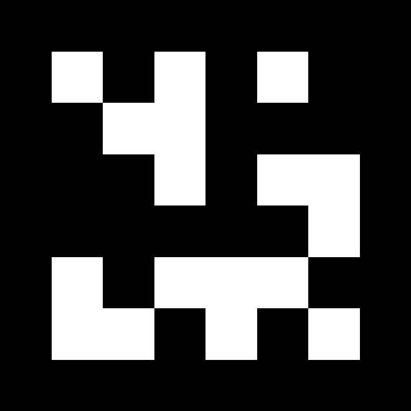
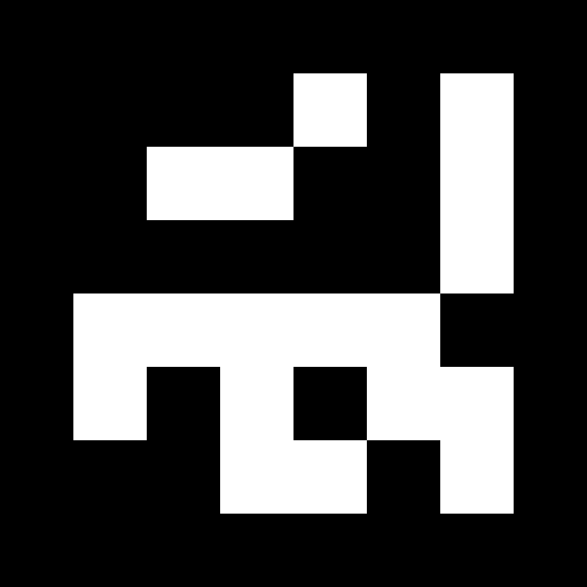
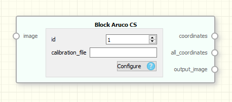
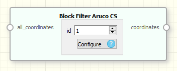

|
MICO
1.0.0
Modular Interchangeable Computer prOgraming
|
|
MICO
1.0.0
Modular Interchangeable Computer prOgraming
|
For better undestanding of what is camera calibration, please refer to other great tutorials as the one provided by OpenCV library link.
To start, you need to print a calibration chessboard pattern. This can be found in many places on internet. For simplicity, you can download this one:
Then run the calibrationApp that is bundled with the AR mico plugin. This app can be ran from command line with the following input arguments.
./calibration_app [cameraIdx] [nPointsBoardVert] [nPointsBoardHoriz] [squareSize (mm)] [outCalibFile]
A windows will pop-up with the stream of the camera you have chosen. If you place the chessboard pattern in front of the camera, a set of coloured points with lines will appear. It means that the camera has detected the pattern and is waiting for you to save an screenshot. In order to do that, left-click on the window. A new message will appear on the terminal saying that an image has been recorder.

We recommend to record at least 12-16 images, placing the calibration pattern at different distances and angles, as shown in the previous gif. Once you have recorded a sufficient number of images, use right-click on the window to stop streaming and start the calibration process. Once it finishes, the application will end and a file will be placed in the location of the folder where the application was ran.
The AR pluging works by detecting specific markers on camera's stream of images. For simplicity, [ARUCO])(https://www.uco.es/investiga/grupos/ava/node/26) markers have been used. These were deceloped by the university of Cordoba in Spain, and popularized in the field of research and robotics thanks to ROS and OpenCV.
For more information, refere to the developers webpage or OpenCV webpage. In this documentation, we have uploaded two sample aruco markers to be used in this tutorial, but there exists many of them.

|

|
|---|---|
| Aruco marker 1 | Aruco marker 2 |
Print them and proceed to the following section.
As mentioned in the previous section, the AR system works by detecting ARUCO markers on the camera stream. There are detected using the BlockArucoCoordinates. This block get an input stream of images and output a set of marker detections. These can be filtered using the BlockFilterAruco which get the set of markers and select the desired one by ID. This detections contains two kind of information: The ID of the marker and the 3D pose of it (represented by a 4x4 affine transform matrix).

|

|
|---|---|
| BlockArucoDetector | BlockArucoFilter |
At first, create a block for the camera and previsualize the stream in an Image Visualizer. You should have something as in the following image.
With these two simple blocks, you can have access to the stream of the images and visualize it on real time.
Then, the next step is to use that stream to detect the ARUCO markers, and use that information to feed our AR system. Create four new blocks:
Up to this point, you should be able to move the camera facing the marker and a 3D axes will appear, indicating the fixed coordinate frame.
Now it is time to add more entities to the game. To do that, we will use the other Aruco Marker and two new blocks:
Another Block Aruco filter is needed to get the new ID and the output stream will be connected to the Block Mesh. The result is a 3D visualization of a cool monkey head in front of your table.